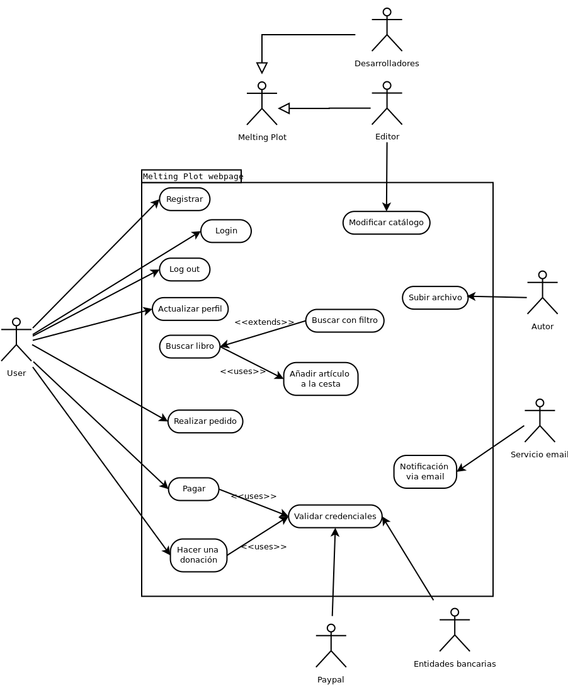

Seminario 2, Identificación de los requerimientos
1. Elaborar dos casos de uso:
Caso de uso: Comprar un libro
- - El usuario puede comunicarse con el sistema.
- - El usuario puede pagar via online.
- - El artículo deseado tiene que estar disponible.
- - El usuario selecciona el artículo deaseado.
- - Se cobra con éxito.
- - No ha podido comprar
- - Fallo en el sistema
Basic Flow:
- El usuario hace log in a la web.
- El usuario busca el artículo que desea.
- El sistema verifica que hay stock.
- Accede a la compra.
- Se selecciona el método de pago.
- El sistema pide las credenciales según el método
- El sistema verifica los datos.
- Se realiza la compra.
- El sistema envia un mail de confirmación al cliente.
-
2.1 No existe artículo
2.1.1 Mensaje: no hay artículo.
3.1 Artículo no disponible en stock.
3.1.1 Mensaje: no queda más stock del artículo.
5.1 Método de pago no soportado
5.1.1 Mensaje, mostrando otras alternativas.
7.1 Error de datos
7.1.1 Mensaje de error ---> retroceder al punto 6.
1-9 El usuario decide desconestarse del sistema
1-9 El usuario es desconectado del sistema por x fallo.
Caso de uso: Validar trabajo subido
- -Un autor sube un trabajo.
- -Se valida el trabajo.
- - Se ha encontrado un error en el processo.
Basic Flow:
- El sistema verifica que no es un archivo malicioso.
- El sistema verifica el formato del archivo.
- El sistema verifica el tamaño del archivo.
- El sistema verifica si el archivo esta corrupto.
- El sistema valida la subida.
- El sistema notifica al autor sobre la validación del fichero via mail.
-
1.1 Virus detectado.
1.1.1 Advertencia al editor y al autor sobre el problema via mail ---> retroceder al punto 1
2.1 Formato no compatible.
2.1.1 Mensaje al autor con detalles de compatibilidad ---> retroceder al punto 1
3.1 Tamaño no compatible.
3.1.1 Mensaje al autor notificando problema de tamaño ---> retroceder al punto 1
4.1 Corrupción detectado
4.1.1 Mensaje al autor notificando problema de corrupción ---> retroceder al punto 1
2. Stakeholders implicados.
Purchase book:-
-Users
-Entidades bancarias
-Paypal
-Servicio de Email.
-Melting pot
-Devs
-
- Users
- Editor
- Servicio de Email.
- Melting pot
- Devs
3. Identify all actors and use cases of the system as well as relations between them.
Actors:- Melting Plot: La editorial ofrece los servicios desde la página web
- Desarolladores: Van a tener que ajustarse a los parámetros indicados por la editorial
- Editor: Modificará el catálogo según le convenga a la editorial
- Autor: Subirá contenido a la web que luego los usuarios podrán adquirir
- Servicio Email: Se encargará de administrar las notificaciones via correo electrónico
- Entidades bancarias: Se encargan de ofrecer el servicio de pago
- Paypal: Encargado de ofrecer el servicio de donaciones
Use cases:
- Registrar: Un nuevo usuario se registra en la página web
- Logout: EL usuario cierra sesión
- Actualizar el perfil: El usuario modifica la configuración de su perfil
- Buscar un libro: Orientado a que un usuario consulte un artículo, pudiendo hacer una búsqueda con filtros
- Añadir un artículo en la cesta: Orientado a que el usario decida comprar el artículo
- Realizar pedido: El usuario tramita el pedido
- Realizar pago: El usuario accede a realizar el cobro por los productos adquiridos tras verificar sus credenciales y permitir a la entidad bancaria realizar el trámite
- Validar credenciales: La entidad bancaria comprueba que las credenciales sean correctas
- Donar: El usuario accede a donar dinero vía PayPal
- Subir un archivo: Un autor decide subir una obra
- Modificar el catálogo: El editor decide qué obras deben o no estar en el catálogo y cómo.
- Notificar vía email: El proveedor de servicio de correo electrónico envía una notificación vía mail al sujeto que la requiera
4. Diagrama de casos de uso.
5. Glosario actualizado en su pestaña.
6. Lista de puntos oscuros actualizada en su pestaña.